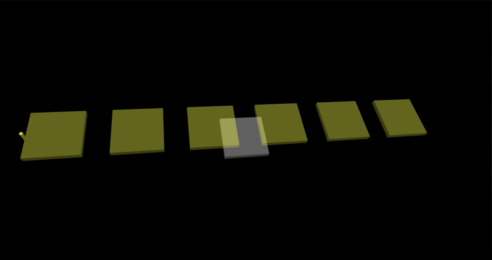
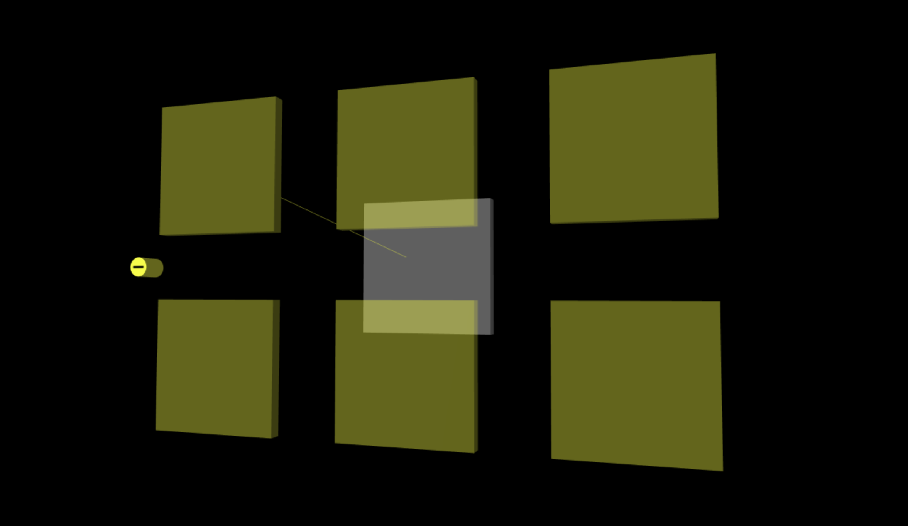
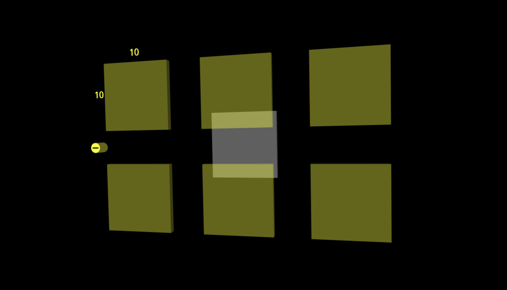

The model object is one of the important components for TensorSpace. All layers are maintained
in the model which is the linkage between visualized objects and computed data.
There are two types of models:
Sequential() and
Model().
To construct a model object, we need two parameters: the
container and the config.
let model = new TSP.models.Sequential( container, config );
The container
is actually the element in the HTML pages we used to render the 3D model.
The config
represents the model settings which contains different properties and methods. Let's check them below.
Property
The model has several different configurations which are used as the default configurations of the model
including all layers and other utility components. For example, we can configure a
Sequential() model like:
let model = new TSP.models.Sequential( container, {
layerInitStatus: "close",
aggregationStrategy: "max",
layerShape: "rect",
textSystem: "enable",
relationSystem: "enable",
animationTimeRatio: 0.1,
stats: true,
color: {
background: 0x000000,
conv2d: 0xffff2E,
pooling2d: 0x00ffff,
dense: 0x00ff00,
padding2d: 0x6eb6ff
}
} );wb_sunnyNote:
- filter_center_focus The model configuration is a general, default configuration for the model. The detailed configurations of each element (e.g. layer) can be configured within the element, which override the model configurations.
The following shows the detailed configurations of the model:
.aggregationStrategy : String
- filter_center_focus Represents the strategy of computing data used to render layer aggregation.
- filter_center_focus "max" or "average". Default "average".
- filter_center_focus "max" to compute aggregation by using the max value of the same position in all channels; "average" to compute aggregation by using the average value of the same position in all channels.

Fig. 1 - Aggregated Layer object
.layerShape : String
- filter_center_focus Represents the layout of expanded feature maps of a layer.
- filter_center_focus "line" or "rect". Default "rect".
- filter_center_focus "line" linear arrangement; "rect" the "best rectangle" arrangement of visualization.
- filter_center_focus For more details about the "best rectangle", please check .createRectangleCenters.
Fig. 2 - Feature maps arranged as a filled rectangle

Fig. 3 - Feature maps arranged as a line
.layerInitStatus : String
- filter_center_focus Represents the initial status of an expandable layer. Either "expanded" as feature maps or "collapsed" as an aggregation
- filter_center_focus "close" or "open". Default "close".
- filter_center_focus "close" to show layer as an aggregation; "open" to show layer as expanded feature maps.

Fig. 4 - Initial layer with collapsed status

Fig. 5 - Initial layer with expanded status
.textSystem : String
- filter_center_focus Enable or disable the display text information of each layers.
- filter_center_focus "enable" or "disable". Default "enable".
- filter_center_focus "enable" to display text information; "disable" not to display text information.

Fig. 6 - Show texts of the layer dimension

Fig. 7 - Disabled text display
.relationSystem : String
- filter_center_focus Enable or disable the display of relation lines among layers.
- filter_center_focus "enable" or "disable". Default "enable".
- filter_center_focus "enable" to display relation lines; "disable" not to display relation lines.

Fig. 8 - Show relation lines between layers

Fig. 9 - Disabled relation line display
.animationTimeRatio : Double
- filter_center_focus Ratio of time spent for actual animation over default animation.
- filter_center_focus Default to 1.
- filter_center_focus The range of the value should be larger than 0.

Fig. 10 - Expansion animation with animationTimeRatio 1

Fig. 11 - Expansion animation with animationTimeRatio 3
.color : color format
- filter_center_focus All necessary color configurations of different layers and the background.
- filter_center_focus We can set the background color in the model configuration.
- filter_center_focus See color for more details.
Fig. 12 - Change background color Purple
.stats : Boolean
- filter_center_focus Whether to use stats utility or not.
- filter_center_focus true or false. Default false.
- filter_center_focus true to show stats utility; false not to show stats utility.
Method
.init( callbackFunction ) : void
- filter_center_focus The init() method use the provided configurations to create the actual objects of the model.
- filter_center_focus See Model (concept) for more details.
.load( model_config ) : void
- filter_center_focus The load() method is used to maintain the pre-trained ML model (from TensorFlow, Keras or TensorFlow.js).
- filter_center_focus We provide a callback function for extendable use.
- filter_center_focus See Load for more details.
.predict( input_data ) : void
- filter_center_focus The predict() method uses the provided input data and the loaded ML model to compute all necessary predictions including the intermediate outputs and final inferences for rendering visualization objects.
- filter_center_focus We provide a callback function for extendable use.
- filter_center_focus See Predict for more details.
.getAllLayers() : Layer[]
- filter_center_focus To get all layer objects within the model.
- filter_center_focus If we want to config all layers or check for specific configurations, we can use the method to catch all layer objects.
.getLayerByName( name ) : Layer
- filter_center_focus To get a specified layer object by its name (String).
- filter_center_focus If any specific layer object is desired to be coordinated, we can use the method to find and layer object.
More
For more detailed implementations of different TensorSpace models, please check:
- filter_center_focus Sequential()
- filter_center_focus Model()